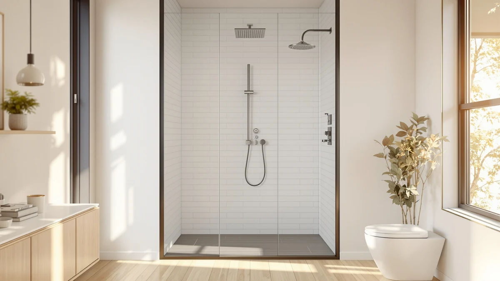

How to Clean Shower Tiles: Complete Guide (2026)
Prices and picks verified as of September 2026. Independent, reader-supported reviews.


Things to Know Before You Buy
- If you're figuring out how to clean shower tiles for the first time, hot water alone loosens soap scum, but grout stains need a dwell time of 10 to 15 minutes with an acidic or enzyme cleaner to actually break down.
- White vinegar handles most tile and grout buildup, but skip it on natural stone tiles since the acid can etch marble, travertine, and limestone.
- A squeegee pass after every shower cuts your weekly cleaning time in half by keeping mineral deposits from setting into the grout lines.
- Plastic or silicone bristle brushes clean grout as well as stiff wire brushes without scratching glazed tile or shower panel finishes.
- Ventilation matters as much as scrubbing. A bathroom fan or cracked window during and after cleaning keeps mildew from returning within days.
Learning how to clean shower tiles properly comes down to giving your cleaner enough contact time before you scrub, rather than attacking soap scum with brute force. Most people reach for a sponge and scrub immediately, which spreads grime around instead of lifting it. Once you let a vinegar solution or tile cleaner sit for a few minutes, the scrubbing itself takes a fraction of the effort.
This guide walks through five steps: clearing and rinsing the shower, applying and letting a cleaner dwell, scrubbing tiles and grout, rinsing everything away, and drying the surfaces so water spots and mildew don't come right back. The whole process takes about 45 minutes and costs roughly $15 in supplies, most of which you likely already have under the sink.
What You'll Need
- Supplies: White vinegar or a tile-safe cleaner, baking soda, dish soap
- Tools: Grout brush or stiff-bristle scrub brush, microfiber cloth and squeegee
You don't need anything specialized to clean shower tiles well. Every item on this list is either already under your sink or costs a few dollars at any grocery store.
Step 1: Clear the shower and rinse the tiles
Pull every bottle, razor, and loofah out of the shower before you start. Loose items block access to corners and edges where grime collects fastest, and you don't want to scrub around a shampoo bottle you could move in two seconds.
Run the shower on hot for two to three minutes to soften surface grime and steam up the space. Heat loosens soap residue and body oils on its own, so the cleaner you apply next has less buildup to cut through. If your shower panel has a handheld wand, use it to direct water into corners and along the base where standing water tends to leave mineral rings. This pre-rinse is the step that separates a quick refresh from a proper deep clean of shower tiles.
Step 2: Apply your cleaning solution and let it sit
Mix equal parts white vinegar and water in a spray bottle, or use a tile-safe commercial cleaner if your tiles are natural stone. Spray the solution generously across the walls, floor, and especially the grout lines, where soap scum and hard water minerals build up thickest.
Walk away for 10 to 15 minutes. This dwell time is the step most people skip, and it's the reason their scrubbing takes twice as long as it needs to. The acid in the vinegar breaks the bond between soap scum and grout during this window, so by the time you pick up a brush the grime lifts instead of fighting back. Dwell time is the single biggest factor in how well any shower tile cleaning method performs.
For grout that hasn't been cleaned in months, make a paste of baking soda and a few drops of dish soap and press it into the lines before spraying the vinegar solution on top. The reaction fizzes and helps pull out ground-in dirt that a spray alone won't touch.
Step 3: Scrub the tiles and grout lines
Work a grout brush along every grout line using short, firm strokes rather than long sweeps. The narrow bristles get into the recessed lines that a sponge glides right over, and short strokes concentrate pressure where it's needed instead of spreading it thin.
Switch to a stiff-bristle scrub brush or a non-scratch sponge for the tile surfaces themselves, working in small circles. Glazed ceramic and porcelain tiles tolerate more pressure than natural stone, so check your tile type before applying serious elbow grease. On shower panel surfaces, stick to a microfiber cloth or soft brush to avoid scratching the finish. This scrubbing pass is where most of your visible progress in cleaning shower tiles happens.
Step 4: Rinse thoroughly and inspect for missed spots
Rinse from top to bottom with hot water, working systematically so you don't leave cleaner residue drying on any section. Leftover vinegar or cleaner residue can dull tile finishes over time if you let it sit and evaporate instead of rinsing it away.
Once the walls are clear, step back and check corners, the area behind fixtures, and the base of the shower panel for spots you missed. Discolored grout that didn't lift on the first pass usually responds to a second, shorter application rather than more aggressive scrubbing. A careful rinse confirms whether your shower tiles are clean or still wet with cleaning solution.
Step 5: Dry the surfaces and squeegee the glass
Squeegee glass doors and panels immediately after rinsing, pulling water down and out toward the drain in overlapping strokes. This single habit prevents most of the hard water spotting that makes glass look permanently cloudy.
Wipe down tile walls and the shower panel with a dry microfiber cloth, paying attention to grout lines where trapped moisture feeds mildew growth. Leave the bathroom door or a window cracked for 20 to 30 minutes afterward so residual humidity can clear instead of settling back into the grout you cleaned. Drying is what keeps freshly cleaned shower tiles from developing new stains within a week.
Common Mistakes to Avoid
The biggest mistake in cleaning shower tiles is skipping the dwell time. Spraying a cleaner and scrubbing immediately forces you to work harder for a worse result, since the solution hasn't had a chance to break the bond between grime and grout. Give it the full 10 to 15 minutes even when you're in a hurry.
Mixing bleach with vinegar or ammonia-based cleaners is another common error, and it's a dangerous one. The combination releases toxic fumes in an enclosed bathroom. Stick to one product family at a time and rinse thoroughly before switching cleaners.
Using steel wool or abrasive powders on glazed tile or shower panel surfaces causes fine scratches that trap dirt and make the next cleaning session harder. Those scratches also dull the glaze over time, so a surface that once wiped clean in seconds starts holding onto grime permanently.
Owners also tend to ignore the ceiling and upper walls, where mildew often starts before it becomes visible lower down. Upper corners and exhaust fan covers get missed during routine cleaning more often than any other spot in the shower, and spores from up there spread back down onto tiles you already scrubbed.
Finally, skipping ventilation after cleaning undoes most of the work. Trapped humidity feeds the same mildew you removed minutes earlier, so run the fan or crack a window for at least 20 minutes once you finish.
Our Top Picks
Once your tiles are clean, a shower panel upgrade is one of the easiest ways to make the whole space feel new again. Here are three options worth comparing based on price and features.

Editor’s Pick
HSYLYPA 5-in-1 Shower Panel Tower
A budget-friendly 5-in-1 tower that covers rain, handheld, and body jet functions without a complicated install.
$129.99
Check Price on Amazon
Best Value
MENATT 5-in-1 LED Shower Panel
Adds LED lighting and a wider spray pattern for the mid-range price, according to verified buyer reviews.
$167.99
Check Price on Amazon
Premium Choice
VEVOR Shower Panel Tower System
A stainless steel build with a thermostatic mixer valve, built for owners who want the sturdiest option long term.
$186.90
Check Price on AmazonFrequently Asked Questions
How often should you clean shower tiles?
A quick squeegee and rinse after every shower keeps buildup light, while a full clean with the five steps above once a week prevents grout stains from setting in. Bathrooms with heavy daily use or hard water may need the full process twice a week.
Is vinegar safe for all shower tile types?
Vinegar works well on ceramic, porcelain, and glass, but its acidity can etch natural stone like marble, travertine, and limestone. Owners with stone tile should use a pH-neutral, stone-safe cleaner instead of vinegar.
What removes black mold from shower grout?
A paste of baking soda and hydrogen peroxide left on the affected grout for 15 to 20 minutes before scrubbing handles most surface mold. Persistent black stains that return within days may indicate mold growing behind the tile, which needs a professional inspection.
Can you use a magic eraser on shower tiles?
Melamine sponges work on glazed tile and glass but can dull matte finishes and shower panel coatings with repeated use. Test a small, hidden area first, and reserve them for stubborn spots rather than routine cleaning.
Why do shower tiles get dirty again so quickly?
Leftover moisture and soap film left to air-dry are the main culprits. Skipping the squeegee step after each shower lets minerals and residue bake onto the surface, which is why the drying step in this guide matters as much as the scrubbing.
Verdict
Learning how to clean shower tiles well comes down to sequence: rinse first, let the cleaner dwell, scrub with the right tool for your tile type, rinse completely, then dry everything before moisture has a chance to settle back into the grout. Skip the dwell time or the drying step and you'll find yourself repeating the whole process within days instead of weeks.
The five steps here take about 45 minutes and cost around $15 in supplies you likely already own. If you're ready to pair a spotless shower with new hardware, the HSYLYPA 5-in-1 Shower Panel Tower is the pick most owners land on for its balance of price and features, with the MENATT and VEVOR options worth comparing if you want more spray modes or a sturdier build. Whichever fixture you choose, a clean tile surface underneath is what makes it look good on day one and day one thousand.